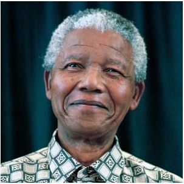

Nelson Mandela
1918 - 2013
Political Leader and Philantropist
served as President of South Africa from 1994 to 1999, His negotioations in the early 1990's with South Africa President F.W. de Klerk helped end the country's apartheid system of racial segregation and ushered in a peacfull transition to majority rule

Nelson Mandela
- 1918 - Born in the village of Mvezo in Umtata, them part of South Africa´s Cape Province
- 1933 - Began his secondary education at Clarkebury Methodist High School in Engcobo, a Western-style institution that was the largest school for black Africans
- 1941 - Arrives in Johannesburgh, found work as a night watchman at Crown Mines
- 1943 - Began studying law at the University of the Witwatersrand, where he was the only black African student
- 1943 - August he joined the ANC
- 1944 - Married his first wife Evelyn
- 1947 - In July he become ANCYL president (ANC Youth League)
- 1962 - In july he is arrested by police along with fellow activists
- 1964 - Transferred from Pretoria to the prison on Robben Island, remaining there for the next 18 years
- 1982 - In Aprin he was transferred to Pollsmoor Prison in Tokai, Cape Town, along with senior ANC leaders
- 1988 - In December he is moved to Victor Verster Prison near Paarl. He was housed in the relative comfort of a warder's house with a personal cook, and he used the time to complete his LLB degree
- 1990 - In february he is unconditional released
- 1994 - In April he become the first black president of South Africa
- 1999 - June: he retires
- 2013 - After suffering from a prolonged respiratory infection, Mandela died on 5 December at the age of 95, at around 20:50 local time at his home in Houghton, surrounded by his family
“Education is the most powerful weapon which you can use to change the world.”
If you have time, you should read more about this incredible human being on his biography